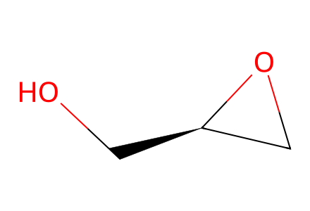
OC[C@@H]1CO1Main Scheme3 forward network, both R-glycidol exploratory and S-glycidol epimerization routes, protecting-group photocyclization variants and isolated cage28. Main-only: cobalt pi-complex26 has an unresolved metal-bond representation; its ligand25 and formation stage are retained. Undrawn S-series early intermediates and unisolated propargylic alcohol mixture are not invented. Cage28 connectivity is transcribed but newly created stereocentres remain review pending. Facts compiled deterministically; independent review pending.
完整 JSON · 逐步 CSV · 路线序列 · SDF · HRMS 核对
| 事件 | 分子连接 | 报告产率 | Canonical reaction SMILES |
|---|---|---|---|
| E01 | R-glycidol + PMBCl → 17 | 17: 100% | COc1ccc(CCl)cc1.OC[C@@H]1CO1>>COc1ccc(COC[C@@H]2CO2)cc1 |
| E02 | 17 + trimethylsulfonium-iodide → 18 | 18: 92% | COc1ccc(COC[C@@H]2CO2)cc1.C[S+](C)C.[I-]>>C=C[C@H](O)COCc1ccc(OC)cc1 |
| E03 | 18 + bromobutyne → 19 | 19: 92% | C=C[C@H](O)COCc1ccc(OC)cc1.CC#CCBr>>C=C[C@@H](COCc1ccc(OC)cc1)OCC#CC |
| E04 | 19 + CO → 20 | 20: 81% | C=C[C@@H](COCc1ccc(OC)cc1)OCC#CC.[C-]#[O+]>>COc1ccc(COC[C@H]2OCC3=C(C)C(=O)C[C@@H]32)cc1 |
| E05 | 20 → 21a | 21a: 100% | COc1ccc(COC[C@H]2OCC3=C(C)C(=O)C[C@@H]32)cc1>>COc1ccc(COC[C@@H](O)[C@H]2CC(=O)C(C)=C2C)cc1 |
| E06 | 21a → 21b | 21b: 83% | COc1ccc(COC[C@@H](O)[C@H]2CC(=O)C(C)=C2C)cc1>>CC1=C(C)[C@@H]([C@H](O)CO)CC1=O |
| E07 | 21a → 21c | 21c: 98% | COc1ccc(COC[C@@H](O)[C@H]2CC(=O)C(C)=C2C)cc1>>COc1ccc(COC[C@@H](O[Si](C)(C)C(C)(C)C)[C@H]2CC(=O)C(C)=C2C)cc1 |
| E08 | 21b + allene → 22b + 23b | 78% combined mixture yield | C=C=C.CC1=C(C)[C@@H]([C@H](O)CO)CC1=O>>C=C1C[C@@]2(C)[C@@H]([C@H](O)CO)CC(=O)[C@@]12C.C=C1C[C@]2(C)[C@@H]([C@H](O)CO)CC(=O)[C@]12C |
| P-a | 21a + allene → 22a + 23a | not reported | C=C=C.COc1ccc(COC[C@@H](O)[C@H]2CC(=O)C(C)=C2C)cc1>>C=C1C[C@@]2(C)[C@@H]([C@H](O)COCc3ccc(OC)cc3)CC(=O)[C@@]12C.C=C1C[C@]2(C)[C@@H]([C@H](O)COCc3ccc(OC)cc3)CC(=O)[C@]12C |
| P-c | 21c + allene → 22c + 23c | not reported | C=C=C.COc1ccc(COC[C@@H](O[Si](C)(C)C(C)(C)C)[C@H]2CC(=O)C(C)=C2C)cc1>>C=C1C[C@@]2(C)[C@@H]([C@@H](COCc3ccc(OC)cc3)O[Si](C)(C)C(C)(C)C)CC(=O)[C@@]12C.C=C1C[C@]2(C)[C@@H]([C@@H](COCc3ccc(OC)cc3)O[Si](C)(C)C(C)(C)C)CC(=O)[C@]12C |
| E09 | 22b + 23b → 24a + 24b | 24a: 31%; 24b: 37% | C=C1C[C@@]2(C)[C@@H]([C@H](O)CO)CC(=O)[C@@]12C.C=C1C[C@]2(C)[C@@H]([C@H](O)CO)CC(=O)[C@]12C>>C=C1C[C@@]2(C)[C@@H](C=O)CC(=O)[C@@]12C.C=C1C[C@]2(C)[C@@H](C=O)CC(=O)[C@]12C |
| R01 | 24a → ent24b | not reported | C=C1C[C@]2(C)[C@@H](C=O)CC(=O)[C@]12C>>C=C1C[C@]2(C)[C@H](C=O)CC(=O)[C@]12C |
| S01 | S-glycidol + PMBCl + trimethylsulfonium-iodide + bromobutyne + CO → ent21c | ent21c: 54% | CC#CCBr.COc1ccc(CCl)cc1.C[S+](C)C.OC[C@H]1CO1.[C-]#[O+].[I-]>>COc1ccc(COC[C@H](O[Si](C)(C)C(C)(C)C)[C@@H]2CC(=O)C(C)=C2C)cc1 |
| S02 | ent21c + allene → ent22c | ent22c: 77% | C=C=C.COc1ccc(COC[C@H](O[Si](C)(C)C(C)(C)C)[C@@H]2CC(=O)C(C)=C2C)cc1>>C=C1C[C@@]2(C)[C@H]([C@H](COCc3ccc(OC)cc3)O[Si](C)(C)C(C)(C)C)CC(=O)[C@@]12C |
| S03 | ent22c → ent22b | ent22b: 81% | C=C1C[C@@]2(C)[C@H]([C@H](COCc3ccc(OC)cc3)O[Si](C)(C)C(C)(C)C)CC(=O)[C@@]12C>>C=C1C[C@@]2(C)[C@H]([C@@H](O)CO)CC(=O)[C@@]12C |
| S04 | ent22b → ent24a | ent24a: 97% | C=C1C[C@@]2(C)[C@H]([C@@H](O)CO)CC(=O)[C@@]12C>>C=C1C[C@@]2(C)[C@H](C=O)CC(=O)[C@@]12C |
| S05 | ent24a → 24b | 24b: 83% | C=C1C[C@@]2(C)[C@H](C=O)CC(=O)[C@@]12C>>C=C1C[C@@]2(C)[C@@H](C=O)CC(=O)[C@@]12C |
| E10 | 24b + bromopropene → 25 | 25: 68% | C=C1C[C@@]2(C)[C@@H](C=O)CC(=O)[C@@]12C.CC=CBr>>C=C1C[C@@]2(C)[C@@H](C(=O)C#CC)CC(=O)[C@@]12C |
| E11 | 25 + CO → 27 | not reported | C=C1C[C@@]2(C)[C@@H](C(=O)C#CC)CC(=O)[C@@]12C.[C-]#[O+]>>CC1=C2C(=O)[C@H]3CC(=O)[C@@]4(C)[C@]2(CC1=O)C[C@@]34C |
| E12 | 27 → 2 + 28 | 2: 66%; 28: 15% | CC1=C2C(=O)[C@H]3CC(=O)[C@@]4(C)[C@]2(CC1=O)C[C@@]34C>>CC1=C2[C@@H](O)[C@H]3CC(=O)[C@@]4(C)[C@]2(CC1=O)C[C@@]34C.CC1C(=O)C[C@@]23C[C@@]4(C)[C@@H]5CC(OC12[C@H]5O)[C@@]34C |

OC[C@@H]1CO1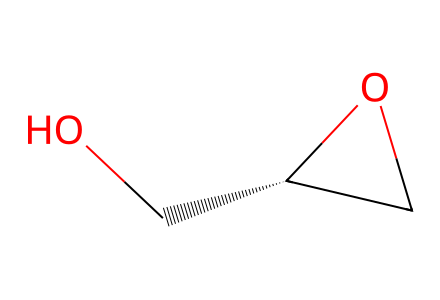
OC[C@H]1CO1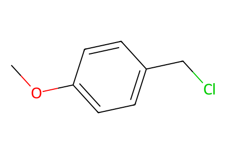
COc1ccc(CCl)cc1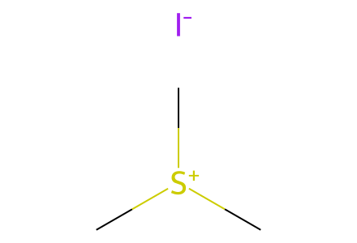
C[S+](C)C.[I-]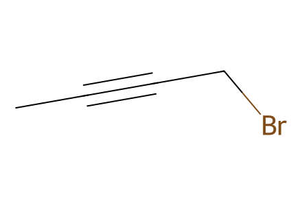
CC#CCBr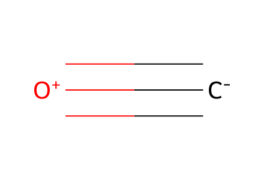
[C-]#[O+]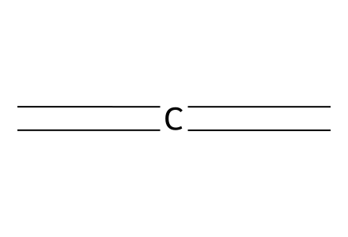
C=C=C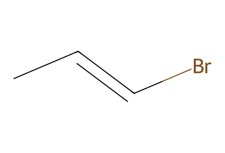
CC=CBr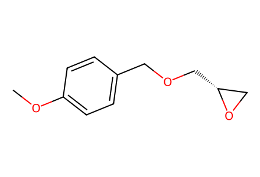
COc1ccc(COC[C@@H]2CO2)cc1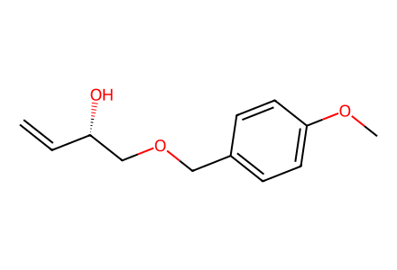
C=C[C@H](O)COCc1ccc(OC)cc1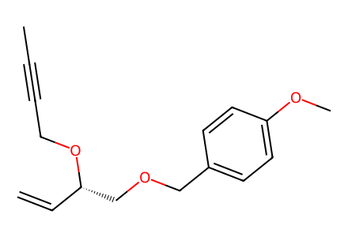
C=C[C@@H](COCc1ccc(OC)cc1)OCC#CC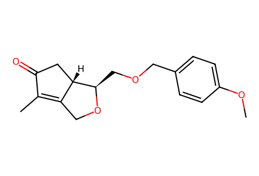
COc1ccc(COC[C@H]2OCC3=C(C)C(=O)C[C@@H]32)cc1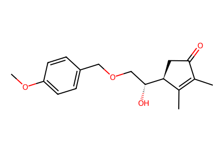
COc1ccc(COC[C@@H](O)[C@H]2CC(=O)C(C)=C2C)cc1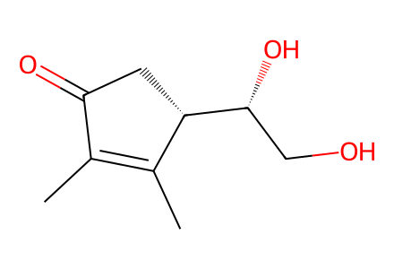
CC1=C(C)[C@@H]([C@H](O)CO)CC1=O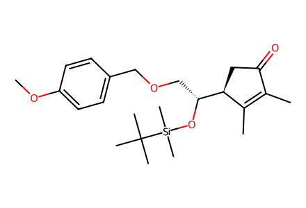
COc1ccc(COC[C@@H](O[Si](C)(C)C(C)(C)C)[C@H]2CC(=O)C(C)=C2C)cc1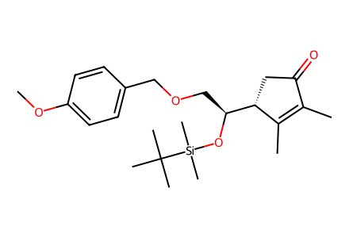
COc1ccc(COC[C@H](O[Si](C)(C)C(C)(C)C)[C@@H]2CC(=O)C(C)=C2C)cc1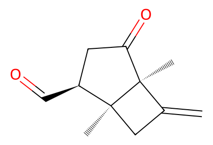
C=C1C[C@@]2(C)[C@@H](C=O)CC(=O)[C@@]12C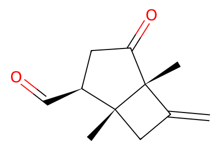
C=C1C[C@]2(C)[C@@H](C=O)CC(=O)[C@]12C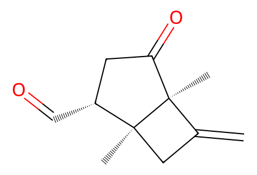
C=C1C[C@@]2(C)[C@H](C=O)CC(=O)[C@@]12C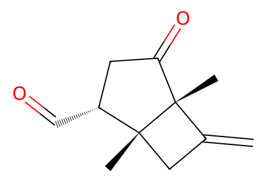
C=C1C[C@]2(C)[C@H](C=O)CC(=O)[C@]12C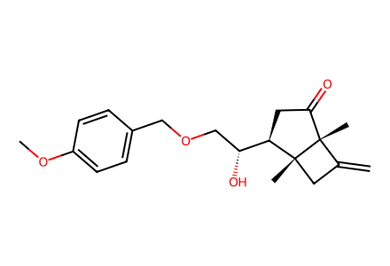
C=C1C[C@]2(C)[C@@H]([C@H](O)COCc3ccc(OC)cc3)CC(=O)[C@]12C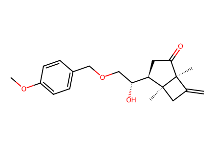
C=C1C[C@@]2(C)[C@@H]([C@H](O)COCc3ccc(OC)cc3)CC(=O)[C@@]12C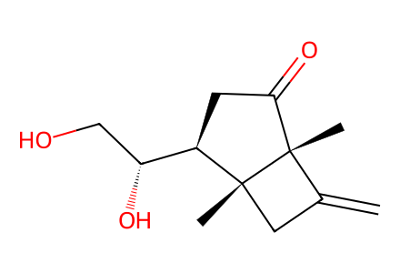
C=C1C[C@]2(C)[C@@H]([C@H](O)CO)CC(=O)[C@]12C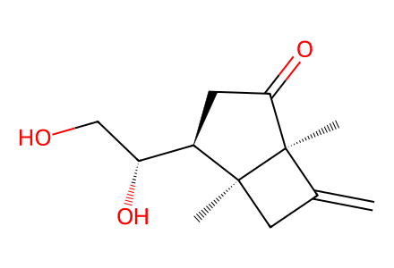
C=C1C[C@@]2(C)[C@@H]([C@H](O)CO)CC(=O)[C@@]12C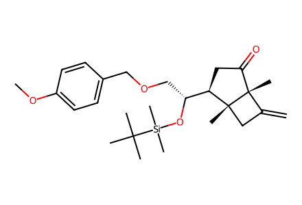
C=C1C[C@]2(C)[C@@H]([C@@H](COCc3ccc(OC)cc3)O[Si](C)(C)C(C)(C)C)CC(=O)[C@]12C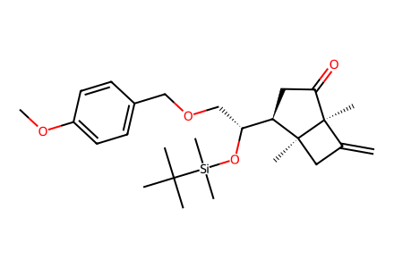
C=C1C[C@@]2(C)[C@@H]([C@@H](COCc3ccc(OC)cc3)O[Si](C)(C)C(C)(C)C)CC(=O)[C@@]12C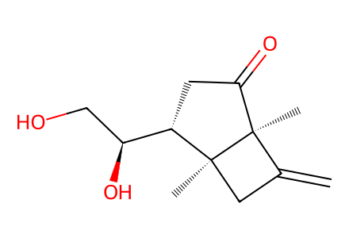
C=C1C[C@@]2(C)[C@H]([C@@H](O)CO)CC(=O)[C@@]12C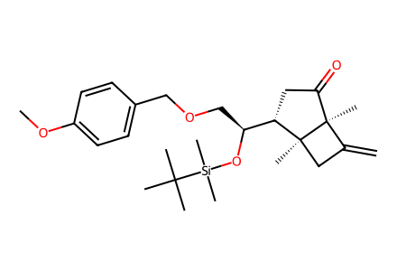
C=C1C[C@@]2(C)[C@H]([C@H](COCc3ccc(OC)cc3)O[Si](C)(C)C(C)(C)C)CC(=O)[C@@]12C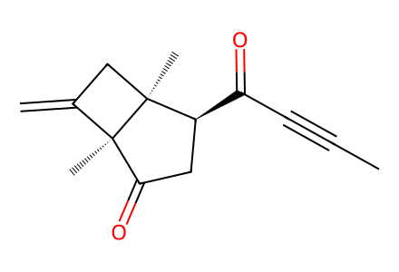
C=C1C[C@@]2(C)[C@@H](C(=O)C#CC)CC(=O)[C@@]12C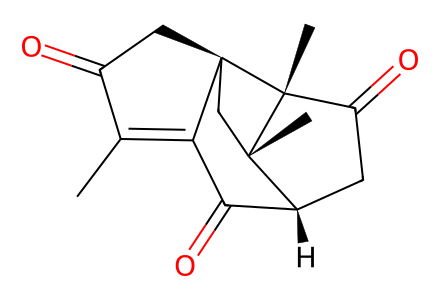
CC1=C2C(=O)[C@H]3CC(=O)[C@@]4(C)[C@]2(CC1=O)C[C@@]34C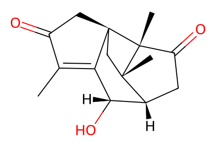
CC1=C2[C@@H](O)[C@H]3CC(=O)[C@@]4(C)[C@]2(CC1=O)C[C@@]34C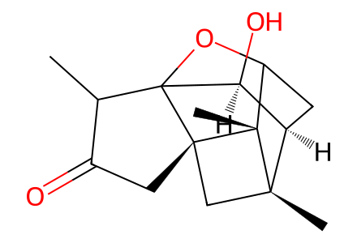
CC1C(=O)C[C@@]23C[C@@]4(C)[C@@H]5CC(OC12[C@H]5O)[C@@]34C